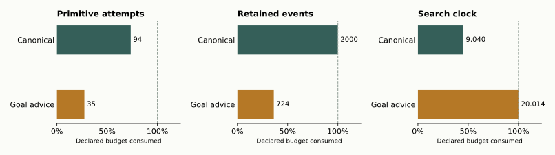

CONTROLS PASSED · BOTH SEARCHES UNKNOWN
More intermediate facts.
Still no proof.
A fresh matched pair tested canonical candidate ordering against generic goal advice. The advised search reported more usable intermediate formulas, but advice was expensive and neither lane produced a proof certificate.
Canonical: trace ceiling after \(94\) attempts. Goal advice: search-clock ceiling after \(35\) attempts. Both resource closures passed. No theorem, learned-policy result or performance advantage is accepted.
\[u=v,\ v=w,\ \operatorname{Incident}(C,u)\ \vdash_{\mathcal T_{\mathrm{I.2}}}\ \operatorname{Incident}(C,w)\]
If \(u\) equals \(v\), \(v\) equals \(w\), and \(C\) is incident with \(u\), conclude that \(C\) is incident with \(w\). This is an equality-transport integration diagnostic in the abstract symbolic incidence language. The supplied hypotheses contain no proof sequence. The guarded Hilbert I.2 fragment is retained, though this target does not require its uniqueness axiom.
Same problem. Different candidate order.
Both new lanes use the same complete catalogue, boundary, model, source code, consumer binding and empty lemma inventory. Each has \(5{,}112\) formula codes, \(2{,}921\) primitive licences, \(4{,}407{,}560\) initial candidates, \(24\) required rows and \(3\) ordered hypothesis seeds. Each gets \(128\) attempts, \(20\,\mathrm{s}\) and \(2{,}000\) events. The original first BASE UNKNOWN remains a separate immutable result.
| Saved observation | Canonical | Goal advice |
|---|---|---|
| Termination | unknown_trace_budget | unknown_search_budget |
| Primitive attempts | \(94\) | \(35\) |
| Retained events | \(2000\) | \(724\) |
| Branches / forced moves / backtracks | \(89 / 5 / 80\) | \(35 / 0 / 27\) |
| Maximum distinct dependency-complete nonroot formulas, reported | \(1\) | \(7\) |
| Complete trajectory | No | No |
| Mathematical certificate | None | None |
| Owned resource closure | Accepted, conditionally | Accepted, conditionally |

What changed in the advised lane?
Backward distances are computed through every admitted primitive licence from the input target. At the row chosen by the existing global scheduler, advice favors new, reachable formulas with dependency-complete strict-prior premises. At most \(64\) legal preferences precede the entire canonical remainder. Global dead checks, global forced moves and earliest-generation selection are unchanged; forced moves receive no advice.
Every candidate remains available. Goal relevance is an ordering hypothesis and earns no proved marking. Both lanes have \(0\) source bodies, \(0\) cluster groups, \(0\) policy draws and \(0\) training updates. This experiment tests deterministic ordering before the cluster and RL comparisons.
The advised raw closure has one additional prospective terminal-contract metadata pin. It supplies no additional rule or proof body; its verification cost is charged to the enclosing cold lane. The shared scientific source and inventory bindings are identical.
The advice cost matters.
| Measured scope | Canonical | Goal advice |
|---|---|---|
| Search, including cleanup and return preparation | \(9.039545\,\mathrm{s}\) | \(20.014491\,\mathrm{s}\) |
| Candidate-advice selection, including fresh fact closure | \(0.000000\,\mathrm{s}\) | \(16.756006\,\mathrm{s}\) |
| Whole ordering | \(1.537755\,\mathrm{s}\) | \(17.062203\,\mathrm{s}\) |
| Cold owner through post-write | \(10.230709\,\mathrm{s}\) | \(20.770746\,\mathrm{s}\) |
| Observed cold caller | \(14.493000\,\mathrm{s}\) | \(23.792000\,\mathrm{s}\) |
| Conservative scoped peak, before reserve | \(66{,}928{,}640\,\mathrm{bytes}\) | \(57{,}081{,}856\,\mathrm{bytes}\) |
Complete relevance construction scanned all \(2{,}921\) licences and took \(0.010988\,\mathrm{s}\) including the call. State-dependent advice then consumed \(16.756006\,\mathrm{s}\) within the search clock. Of \(36\) selection observations, \(35\) completed; the last was rejected at the deadline with no preferred keys accepted. Its incomplete work remains charged.
The completed calls scanned \(102{,}235\) licence records and issued \(21{,}694\) exact legality queries. Their preferred-selection loops took \(16.203140\,\mathrm{s}\). Source inspection shows that each query also invokes whole-graph integrity checks. Those checks are a plausible source of repeated overhead; their individual cost has not been measured.
These clocks overlap: advice is within ordering, ordering is within search, and search is within the owner and caller. Do not add nested timers. Both enclosing closures passed the same conditional \(180/175/170\,\mathrm{s}\), \(512\,\mathrm{MiB}\) envelope with the prospective \(32\,\mathrm{MiB}\) postlude reserve. Later saved-metadata adapters cost \(0.118\,\mathrm{s}\) and \(0.121\,\mathrm{s}\), separately observed. No hard OS cap or independent whole-host audit is claimed.
ACTUAL ENGINEERING EVIDENCE
Full fallback and exact rollback passed the controls.
The controls independently reconstructed all twelve saved tiny catalogues and compared the actual graph against a distinct literal reference. Across \(48\) states they checked all \(24\) row domains, global decisions, distant formula/read-port marking rejection, pending facts becoming usable only after their premises, stale ordered-domain rejection, and exact paired graph/controller/overlay rollback. \(32\) actual advice observations matched the independently ranked complete legal relation.
Separately labelled nonlogical fixtures checked repeated ordered ports and aliases, cycles and unreachable formulas, novelty changes, strict-prior inputs, and \(70\) complete keys with \(64\) preferences plus full fallback. Deterministic deadline interruptions returned neither a partial cache nor a partial preference list. All \(14\) resource predicates closed; the actual controls caller took \(10.608\,\mathrm{s}\), the owner \(6.111200\,\mathrm{s}\), and the conservative scoped peak was \(43{,}171{,}840\,\mathrm{bytes}\), before the separate \(8\,\mathrm{MiB}\) reserve.
These are finite engineering controls on the existing synthetic logical fixture and a separate nonlogical double. They do not establish a production theorem, full search-trajectory correctness, arbitrary generations, fractional/shared support or general master conformance. The proof-row specialization remains unit occupancy, translations only, all boundary roots at generation \(0\).
Engineering failures retained before the successful controls
Independent review found that the unexecuted first loader could read an unpinned bytecode cache. A separate fixed version compiles the verified raw source buffer directly. The first supervisor admission then rejected ROOT's absolute pin spellings before launching any observer or worker; its observed \(7.658\,\mathrm{s}\) and failed plan remain recorded. The corrected plan used the unchanged supervisor's relative-path pin ABI. Only then did the first actual controls child run, under the original full limits. The later resource-metadata finalizer took \(0.064\,\mathrm{s}\).
A useful failure diagnosis, still an open proof-search problem.
The advised prefix reports up to \(7\) distinct dependency-complete nonroot formulas, against \(1\) in the canonical prefix. That is a sign of a different search behavior, not a checked theorem or a performance advantage. Both retained trajectories are incomplete. Their reported root restoration has not received independent semantic replay.
The next narrow experiment will batch exact membership queries in groups of at most \(64\), with full integrity checks at entry and exit, the unchanged exact predicate for every candidate, and stale-state rejection after placement, exclusion or rollback. For the recorded completed calls this predicts \(350\) batches and \(700\) endpoint checks, while retaining all \(21{,}694\) membership tests. This is a source-derived count forecast, not a measured speedup.
The complete advice relation, ranking, canonical fallback and global scheduler remain the controls. Batch and scalar membership must first agree on remote markings, assigned zero, exclusions and rollback. The subsequent paired searches will retain the same catalogue and budgets. The relevance heuristic may also need improvement; a faster implementation alone would not guarantee a proof.
A positive result must still reconstruct every primitive tile and remote marking, check the original symbolic ground sequent, and expose the certified rows as formulas and English. The two guarded-uniqueness recipients remain declared and unrun. Receptor-family extraction and learned cluster proposals still require checked donors and equal-inventory controls. This pair provides no evidence of matching or surpassing an established automated prover.
Parallel work made the test concrete.
Integration
One agent bound canonical and advised lanes to the same engine, context and empty inventory, preserving final certificate checking.
Controls
A second authored literal-reference controls and independently checked the actual paired plans.
Independent review
A third caught the bytecode-loader gap and reviewed the source changes and saved outcomes.
ROOT
Integrated the plans, ran the bounded phases, retained failures and UNKNOWNs, and published the measured report.
Implementation, evaluation and review can progress concurrently. Search results remain accountable to one frozen problem and explicit trust boundaries. The independent saved-record reconciliation checks pins, terminal records and scalar/list lengths; it does not replay mathematical trajectories or independently re-attest the borrowed supervision sources.
Inspect the retained evidence.
Download the sanitized pair and controls summary · Export the budget figure · Original first BASE outcome · Initial colored tile boundary · The three symbolic statements

No completed proof tiles are shown because neither new lane has an accepted certificate. All raw task artifacts and the earlier failed admission remain retained separately. The broader research program remains active.